My Problem-Solving Process:
An Orchard Walk-through
Scaling career guidance through systems thinking, trust-first AI, and student-centered UX.
Peter Baunach • Founding Product Designer
How do you prepare students for the future
when the system is overloaded?
High schoolers are pressured to choose a life path before they can even rent a car. With high counselor-to-student ratios, most kids leave school unprepared and without guidance, defaulting to "safe" majors like Business or Marketing.
Counselor to student ratio in American public schools.
American School Counselor Association
of children entering school today will end up working in jobs that don't even exist yet.
World Economic Forum
of graduates feel only moderately, slightly, or not at all prepared for life after high school.
YouScience Post-Graduation Readiness Report
User Personas
Student
(Primary User)
Pain Point: Anxious about the future, overwhelmed by options, and lacking resources for exploration and guidance.
Counselor
(Champion)
Pain Point: Cares deeply about student outcomes but is burning out under unsustainable administrative loads and high student ratios.
District Leader
(Buyer)
Pain Point: Focused on district metrics, accountability, budget allocation, equity, and state reporting standards.
Initial Hypothesis - The Content-First Strategy
Students just need a library of high-quality content and some gamification to encourage exploring. Counselors need a way to track progress, view trends and assign homework.
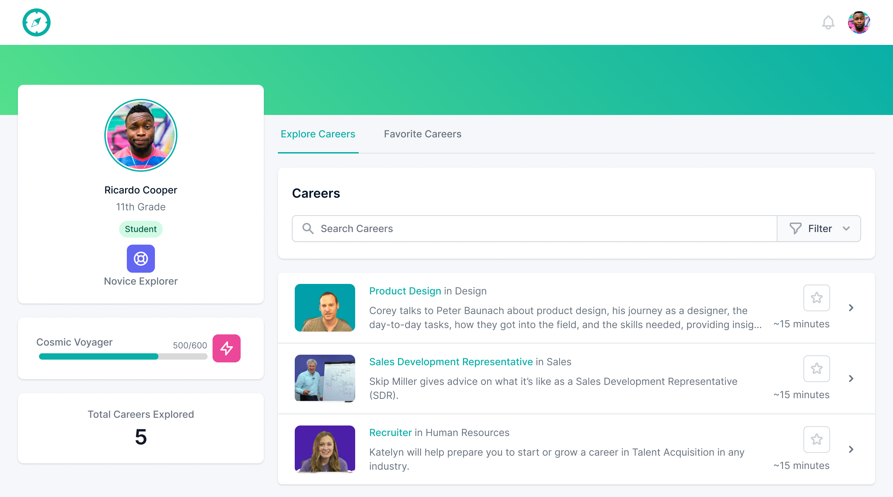

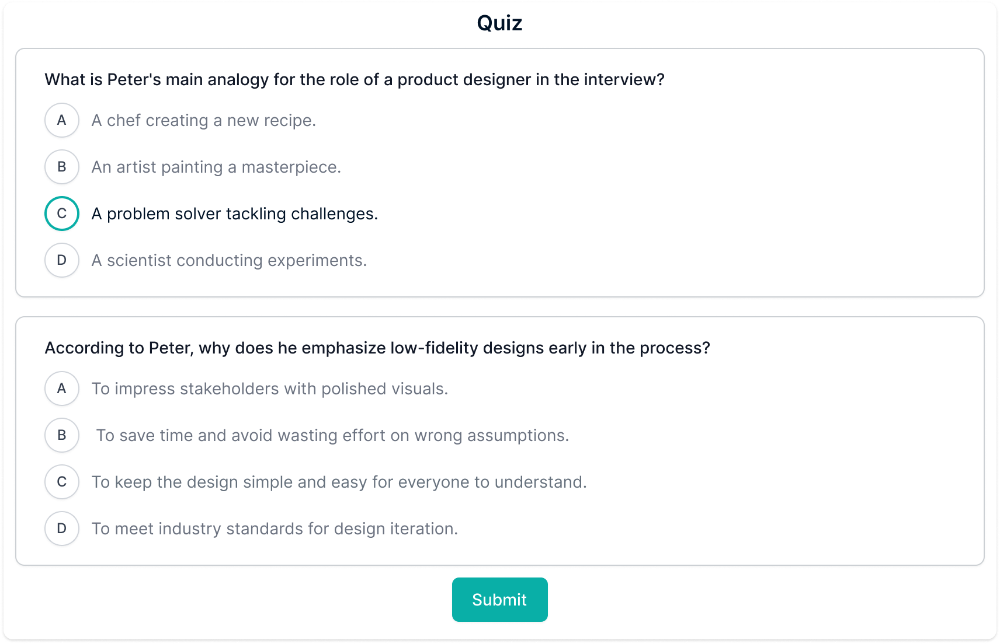
Getting Ready for Testing
For students.
We reached out to everyone we knew and filmed our own high-quality career interviews, built a gamified
exploration experience, and added quizzes to prove students were watching.
For counselors.
A way to track progress and assign "career homework" to their students.
Didn't Work
Search Bar Bias
Students didn't explore because they didn't know what to ask. They defaulted to the same three careers they'd seen on TV, leaving the rest of our database untouched.
Quiz Friction
We thought gamified quizzes would prove learning. Students saw them as "just more schoolwork" and disengaged immediately.
Dashboard Fatigue
Counselors were already drowning in administrative tools. The last thing they wanted was another system to log into. They needed a way to make their rare one-on-one time more effective.
Showed Promise
Attention as a Metric
Even when students ignored the text and the quizzes, they would still engage with the career interviews.
Visual Authenticity
They weren't looking for data, they were looking for a vibe. Seeing a real person in their real work environment humanised a career in a way a salary table never could.
The Scroll Instinct
Students fast-forwarded through long videos hunting for the interesting moments, signalling they wanted high-density information in short, punchy bursts.
A Shift in Focus
Research prompted a key pivot: moving from a passive, search-heavy dashboard to an interactive discovery engine. We leaned heavy into video exploration.
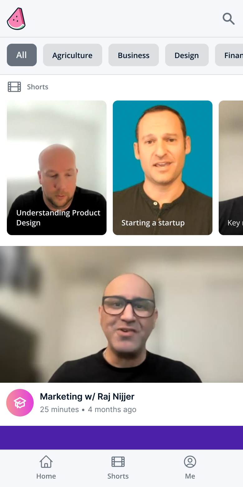
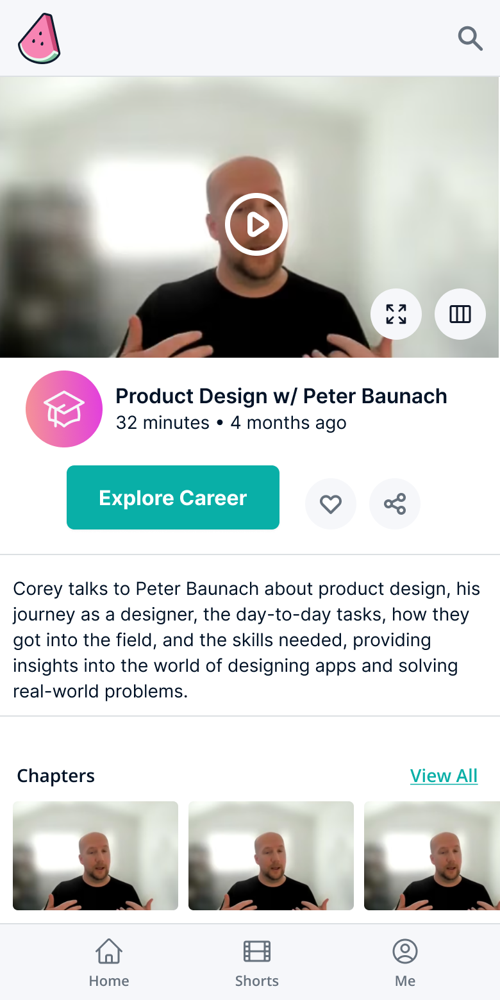
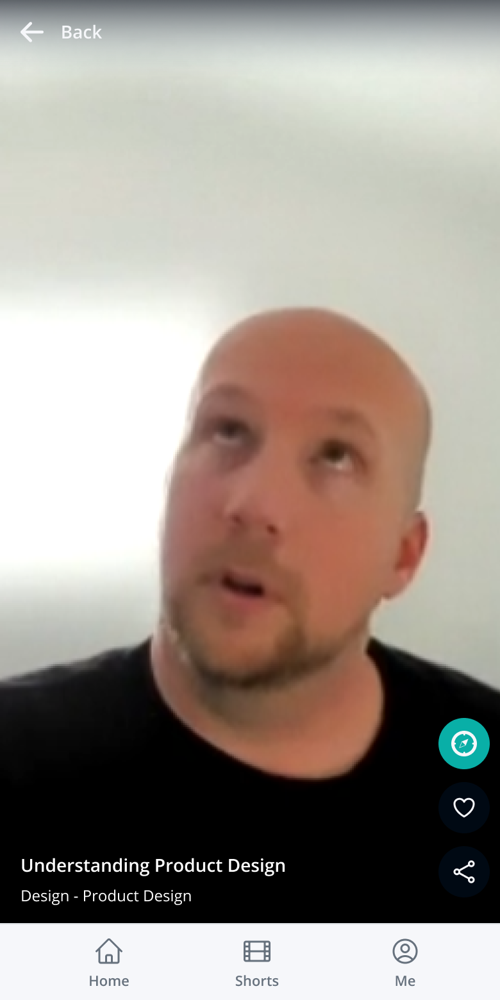
Video Focus
Long-form cut into 30-second teasers.
Focused on the most interesting part of a job, the "day in the life" moments.
A mobile-first scrollable feed, not a search box.
By mimicking the social patterns students already used, accidental discovery started happening. A student
would scroll for a "Business" clip and stop on a "Product Designer" video because the thumbnail grabbed them.
Counselors
From managing to conversation.
A dashboard was just another system to manage. So we helped students build a personalized career plan
before their five-minute check-in, turning a forgettable touchpoint into a high-value conversation.
Testing: Round Two
With a solid proof-of-concept in hand, it was time to push the product further. We integrated analytics and sent it to a list of ~20,000 educators. Even though they weren't our primary demographic, watching them interact unassisted provided the kind of "raw" data you just can't get in a lab. For the next two weeks, our morning ritual was analyzing session recordings, letting us see exactly where users thrived and where they stumbled.
What worked
The short-form video feed was working, people were exploring, and we felt like we had a handle on the discovery problem.
Generative AI went mainstream
Seemingly out of nowhere, Generative AI went mainstream and the world was flooded with AI apps. Most of them felt like dense, academic text blocks that used a lot of verbose "AI lingo" to say very little. It was a technology looking for a problem, and for a moment, it felt like the quiet, human-centric "mentorship" vibe we were building was at risk of being drowned out by the noise.
Should we also add a chatbot?
Instead of just "adding a chatbot" because it was the trend, we took a step back to review our original mission. We asked ourselves a hard question: In a world where everyone has an LLM in their pocket, is our problem statement still valid? The answer was a resounding yes.
The Reality
The counselor-to-student ratio hadn't changed.
The Complexity
The job market was actually becoming more confusing because of AI.
The Opportunity
We realized that while generic AI was verbose and cold, a guided AI, grounded in our career interviews and human-centric philosophy, could be the "Counselor-in-Pocket" we had been trying to build all along.
Aligning the Tech to the Mission
LLM technology made our vision of an always-on career counselor possible. But we made an intentional choice: the AI never auto-assigns a "perfect match" career based on a quiz. Instead, it acts as a supportive partner, guiding exploration while keeping the student firmly in the driver's seat.
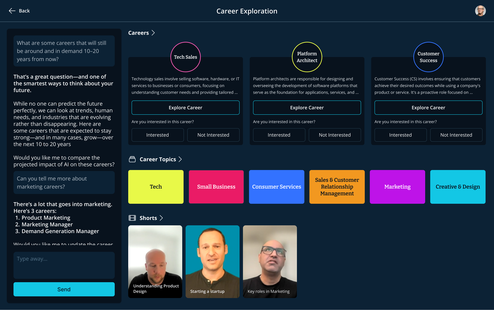
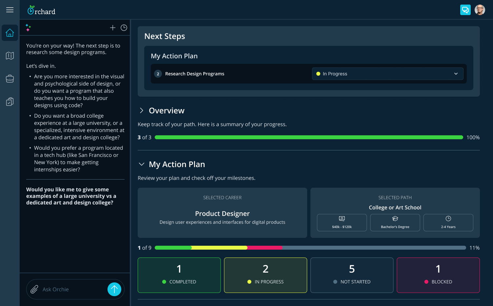
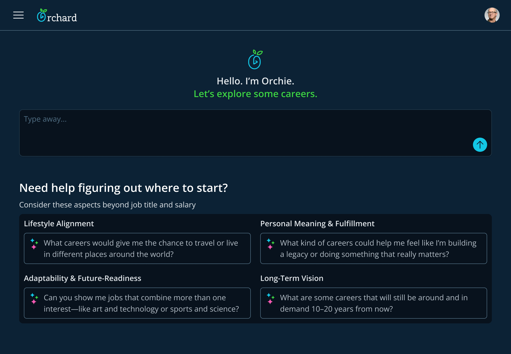
Putting our AI Plan into Action
Building Orchie 1.0 meant bringing everything together: our original library of career content, an AI-powered comparison engine, and guided workflows to help students actively plan their next steps.
Schools thought it was "neat." Nobody committed.
The product worked. Students engaged with it, counselors liked it, but district leaders still wouldn't add it to the budget.
What they were actually saying
"We need a measurable way to show student growth in order to get funding for a new tool."
A district can't buy what it can't justify to a school board. The thing standing between us and every contract wasn't a feature. It was measurable growth.
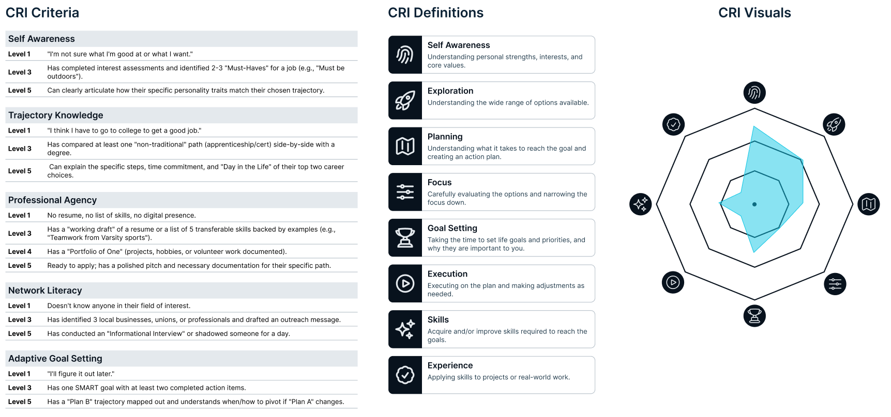

So we designed the
Career Readiness Index
A credit score for career readiness.
The CRI acts like a personal credit score for career readiness. Instead of measuring static test scores or
grade compliance, it tracks a student's real-world growth across 8 core dimensions.
Start with a rubric, not a chart.
We started with a basic rubric to ground abstract ideas into observable actions. From there we distilled
them into 8 distinct pillars along with a visual that allows students, counselors and parents an instant
snapshot of their growth.
Internal model tuning.
The CRI model started to get complex fast. Once every action in the system started impacting the score we
needed a way to simulate actions to see the impact of our tuning.
District Leaders started to perk up
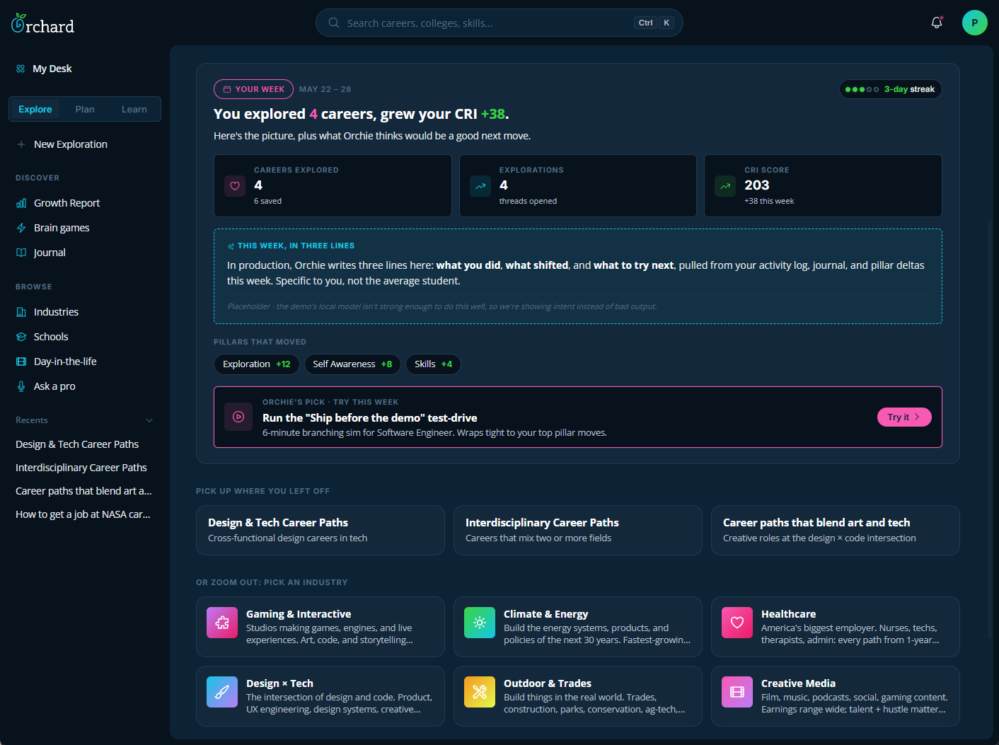
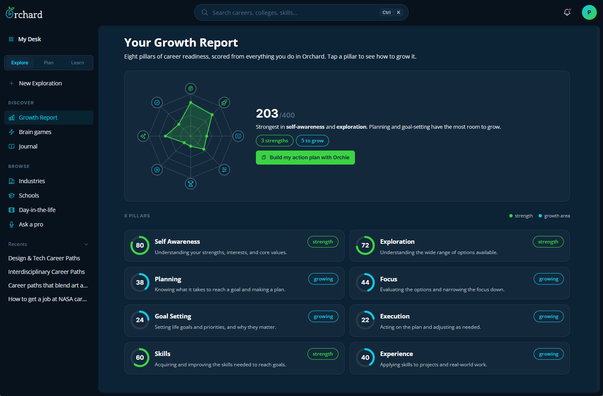
With that buy in, we restructured the experience
around measuring growth
Built to be trusted with student data
For a product used by minors and bought by districts, trust isn't a feature. It's the foundation.
Governance
We follow FERPA, and soon COPPA: student data stays protected, and Orchie never offers medical or therapeutic counseling.
Our AI policy requires Orchie to cite verifiable sources and stay auditable.
Guardrail
- Real-time PII scrubbing, so student records never reach the LLM.
- Distressed-language detection that flags and escalates to a human counselor.
- Grounded in our own data plus federally compliant sources like the BLS and O*NET.
- Every stat is cited. If Orchie doesn't know, it says so rather than hallucinate.
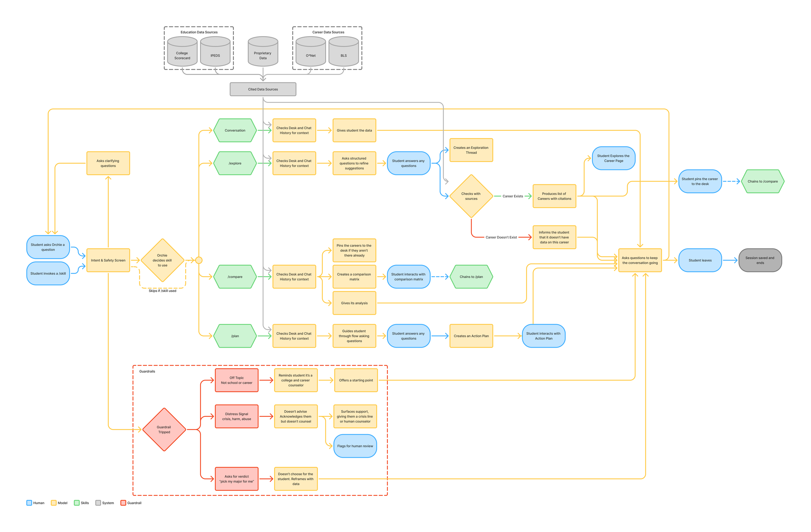
Guardrails and Governance designed into Orchie
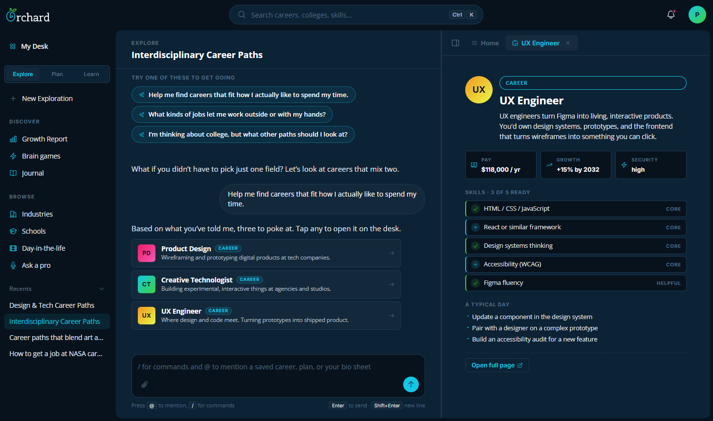
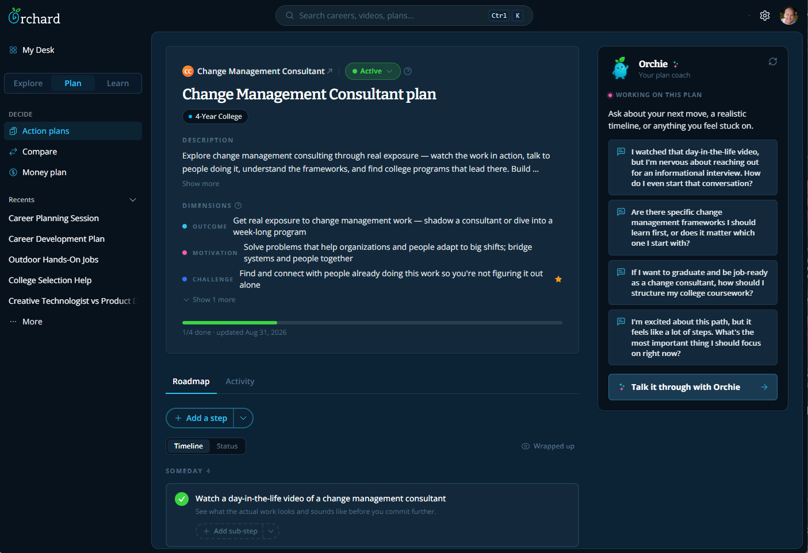
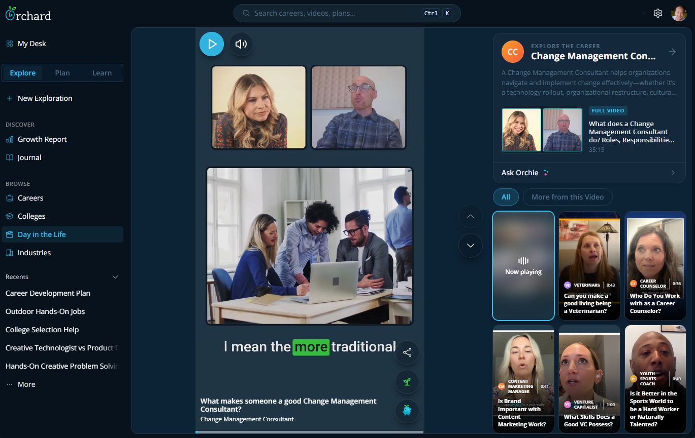
Orchard 2.0
The version that measured growth is the one that got into schools.
Schools now piloting Orchard
Two public, one charter, three private. The counselor economics are wildly different across those three, so holding up in all of them says this isn't only a stand-in for a counselor a school can't afford.
Awarded through Curriki AI grant applications
They applied for the grant specifically to bring Orchard in, and Curriki approved it. Outside review, outside funding, adds to the validation.
Students impacted
The first cohort large enough to test the CRI at scale and drive adoption.
Who I worked with
How everyone stayed aligned
We all watched PostHog session recordings and metrics, joined weekly product reviews, and stress tested.
What I owned
Product Strategy
Framed the problem, ran each hypothesis, and made the case to move off the ones that failed.
Product Design & Prototype
Designed every surface across all four iterations, plus the working prototype the team tested and engineering built off of.
Branding and Team Alignment
The identity, and keeping a four-person team pointed at the same problem through three pivots.